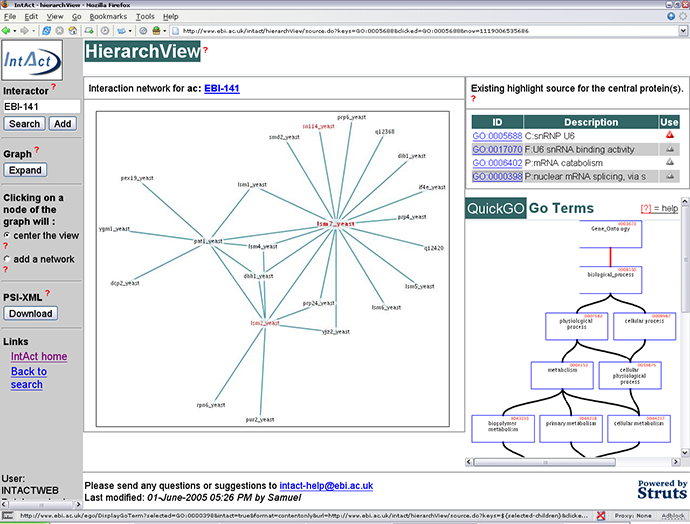
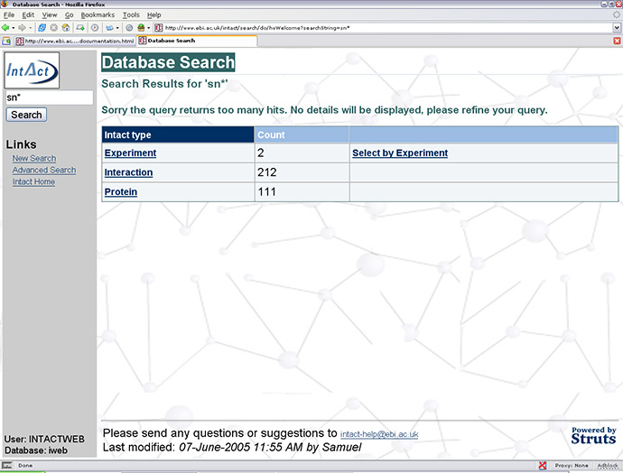
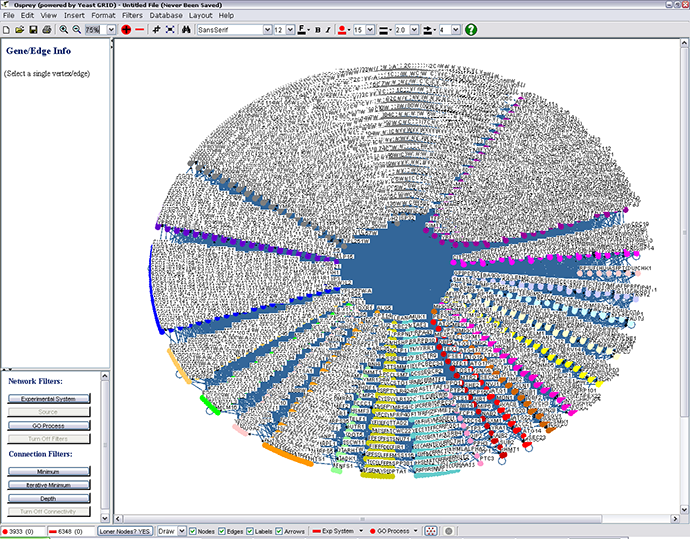
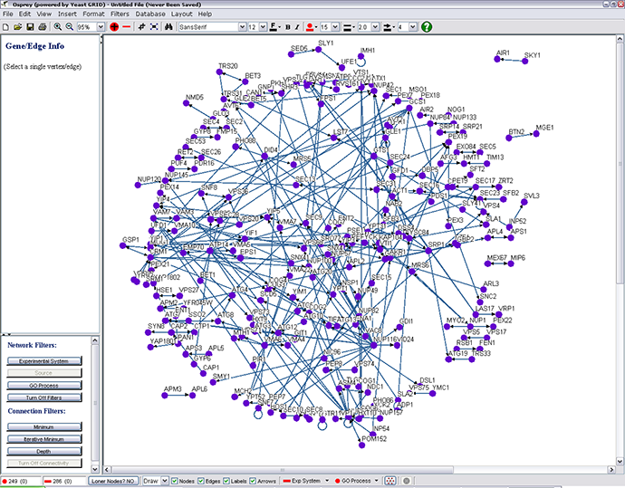
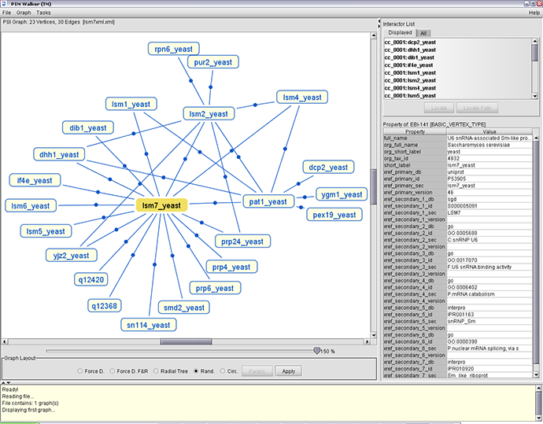

|
IntAct has a network visualization tool built-in to the web service, HierarchView, which displays an interaction network.

What is an interaction network?
It is a graphical way of representing a protein protein interaction network as a two dimensional graph structure. Within that graph,
the nodes represent proteins and the edges represent interactions.
How to display an interaction network?
Type in the search form either a protein name or accession number and click the search button to display the related interaction
network. You are free to type a comma separated list of proteins in order to display all of them in one go. When querying IntAct to
display an interaction network, if the query is ambiguous (e.g. the query snu* could describes several proteins such as snu66, snu13...),
you will be automatically forwarded to the search application where you will be able to select the targeted protein(s) (as shown below)..

Modifying the view
Center the view
To navigate in the interaction network, you can decide to change the current central protein. To do so, switch the mouse-click (sidebar)
behaviour to “center the view”, then, click on the required protein. The current interaction network will be reloaded with
the selected protein as the central node.
Expand the current interaction network
To improve the readability and the loading time, the default depth of an interaction network has been set relatively low. In order to
expand the current interaction network, by clicking the expand button in the sidebar. Bear
in mind that there is a minimum and maximum depth, the expand or contract button disappears when the maximum or minimum depth is reached.
Highlight the interaction network
After loading an interaction network, a list of GO terms specific to the set of selected proteins is displayed in the top right frame
of HierarchView. By clicking on one of them, the related GO hierarchy appears in the bottom right frame (powered by QuickGo). If a
single GO term is found, the hierarchy is displayed automatically. Now you can select one of the displayed GO terms to highlight in
the interaction network all proteins annotated with that GO term in the IntAct database. These proteins will appear with
a differently colored label. In the GO hierarchy, the lower the term (e.g. children of a GO term), the more specific, and the higher you go
(the parents of a GO term), the more generic the GO terms become. Bear in mind that when selecting a GO term in the displayed hierarchy
all proteins that have parents of that term will also be displayed.
*** For a flash-movie demonstration about using HierarchView click
here
***
Analyzing IntAct Data in Third Party Network Visualization Software
Downloading the interaction network in PSI MI XML format
To download the data that produces the HierarchView graph simply click on the "Download" button under "PSI-XML"
shown on the page above to get a page similar to that below.

The page above shows the data from IntAct in a type of
XML
format called
PSI-MI.
PSI-MI is a modern format developed to enable the exchange of molecular interaction data using XML.
For more information please follow the links.
To save the IntAct data
* Using Firefox (
 )
)
File / Save Page As / - ensure "Save type as " is selected as "XML Document" / Save
* Using IE
File / Save As... / - ensure "Save as type:" is selected as "XML file (*.xml)" / Save
Third Party Network Visualization Software
There are many programs which can be used to view IntAct data exported from HierarchView.
Below is a review of the most popular programs. Please note that these reviews represent trials using
the latest versions at the time of writing (05/2005). As such the reviews below will not describe the
functionalities developed since and which will be avialiable in the lastest versions.
Cytoscape
Funding for Cytoscape is provided by a federal grant from the U.S.
National Institute of General Medical Sciences (NIGMS)
of the
National Institutes of Health (NIH)
under award number GM070743-01. Corporate funding is provided through a contract from
Unilever PLC. The project has development community consisting of a number of experienced
bioinformaticians from a variety of backgrounds. Hence Cytoscape is well organised and well funded. The program can be downloaded
for free and is easy to install. One of the most exciting features of Cytoscape is the possibility to create plugins to customize
Cytoscape. The community encourage this and provide instruction on how plug-ins can be developed on their website. The website also
features a page of plugins available. For the purpose of using cytoscape with IntAct data
download and install the PSI-MI Import/Export Plugin.
The interface is simple and well laid out and its functionality is relatively intuitive. For a
demonstration
on how to use cytoscape click
here. Cytoscape has been
developed with systems biology in mind and while interaction networks are certainly useful as stand-alone models such models can be of more
scientific interest when integrated with gene and protein expression data. Expression ratios/levels may be visually superimposed on
the network.

Osprey
Osprey is a tool for graphically representing biological interactions. Data can be imported from
The GRID
(General Repository for Interaction Data) or from manually curated spreadsheets. The datasets can be very large, shown below, is the
yeast-two hybrid dataset.

Unfortunately (at the time of writing), the program does not allow for the import of PSI-MI data and thus is not of much use to
IntAct users. However, for analyzing data sets held in the The GRID it is a very useful tool, especially as nodes can be filtered
by Gene Ontology IDs. The picture below shows a dataset filtered to show only transporters.

Pajek
Pajek is another network analysis program. However rather than being designed to analyse biological data the authors of Pajek
have developed the program with study of social networks in mind. An advantage of this program is that it can convert from data
from spreadsheet style or plain text to a Pajek network file. The major disadvantage is that it cannot handle PSI-MI data and thus
is not recommended for analyzing IntAct data at this moment in time.
PIMWalker®
PIMWalker® is a viewer for protein-protein interactions map. It is able to display such maps as graphs where vertices are the
proteins and edges represent the known interactions between proteins. PIM Walker is able to read data from HUPO/PSI as XML files,
thus it is ideal for viewing IntAct data, as shown below. As it is designed exclusively for use with PSI-MI XML data, it contains
features which make use of the detailed annotation. By selecting a node (protein) or a line (interaction) the properties are
shown in the right-hand column. Individual proteins can be selected to be displayed from those loaded
from the PSI-MI file enabling specific parts of networks to be viewed. The program can be downloaded for free is easy to install and use.

ProViz
ProViz was developed with IntAct in mind thus it able to handle the PSI-MI XMl format and makes the most of the details the PSI-MI
format hold. Furthermore, ProViz allows for selecting of proteins by Gene Ontology Annotations. This enables proteins of similar
function to be viewed. A drawback is that the program is designed to run exclusively on the Linux operating system platform.
|